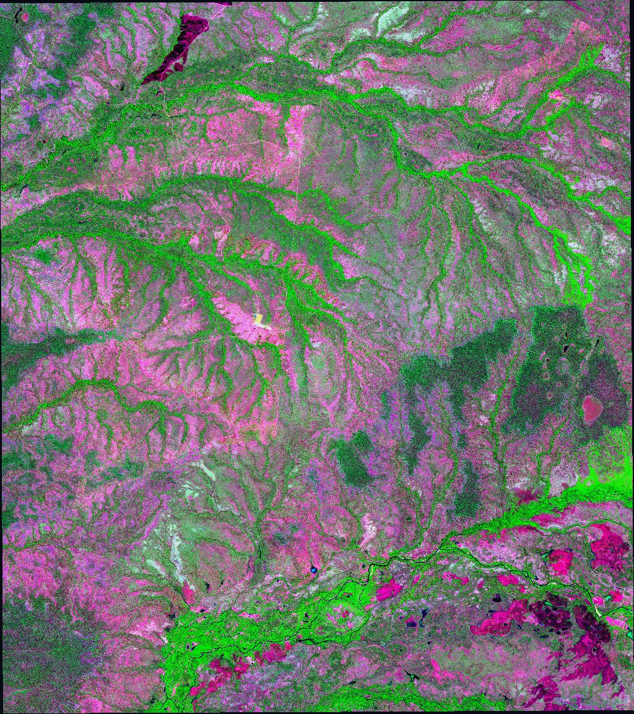
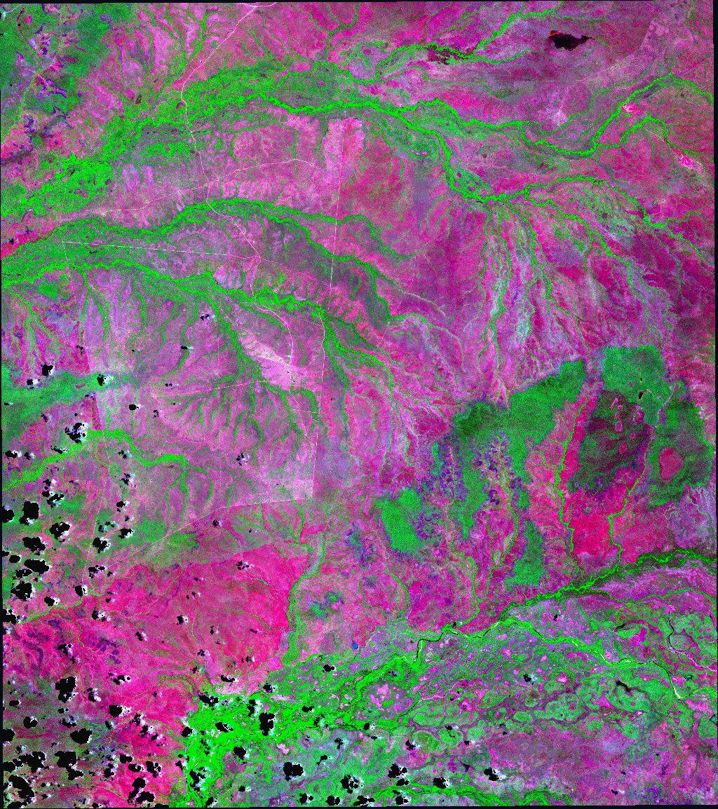
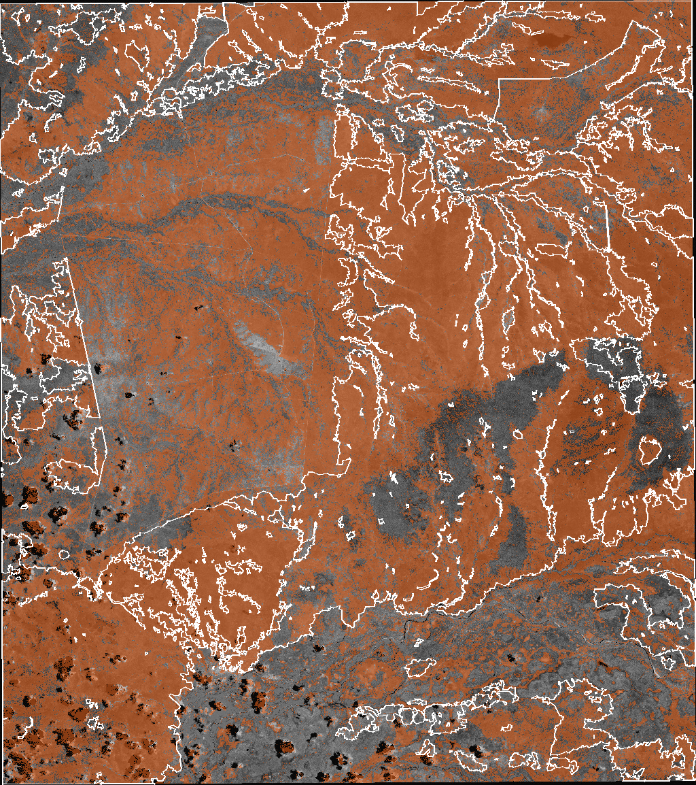

Spotting bushfire scars from space
Our simple method didn’t work here: just guessing that the whole area burned scored about as well, or better.
Negative result
What does this mean?
A negative result means a test did not give the answer we hoped for. We hoped our method would beat a lazy guess. It did not. That is still worth knowing.
Plate 1: Before, July 2022

Plate 2: After, October 2022

Plate 3: Change

1 The place
This is bushland near the tip of Cape York in northern Queensland, about 55 km across.
2 What happened
Bushfires burned across this land in 2022, mostly in the dry months. Our first photo is from July, before the fires. Our second is from October, after.
3 How a satellite sees a burn
A satellite sees more than we do. It also records infrared light, which our eyes cannot see. Burnt ground sends back infrared light differently from living plants.
So we compare the July and October photos. A big change in infrared hints at a fire.
What does this mean?
Healthy leaves bounce back a lot of one kind of infrared, called near infrared. Burnt ground bounces back less of it. It bounces back more of a second kind, called shortwave infrared.
Experts mix the two into one number called dNBR. A bigger dNBR means more change.
4 What we found
We scored both ways of finding the burnt ground. The scale runs from 0 to 100. Higher is better.
We tested it on the eastern half. This is a score out of 100 (an F1 score times 100), not a percentage match.
What does this mean?
An F1 score checks two things at once. How much of the burnt ground did we find? And how little did we mark by mistake? A perfect score is 100.
We also tested six smaller squares. Our method did a little better than the guess on four of them, but not by enough to count.
5 Why it failed here
- Most of the land burned. A guess of “all burned” is right most of the time.
- The photos are about three and a half months apart. Normal dry-season browning can look like fire.
- The official map came from the same satellite. So it is not an independent check.
- The test squares touch each other. So they are not fully separate tests.
6 What it means for you
Before you trust a burn map’s score, check it against the ‘everything burned’ guess.
If a map cannot beat that guess, its score tells you little.
Sources and licences
- Satellite photos: Copernicus Sentinel-2. Contains modified Copernicus Sentinel data 2022.
- Fire outlines: Queensland fire scars, CC BY 4.0. State of Queensland, Department of Environment and Science, 2022.
Want the maps, tables and methods? See the specialists page. The code is on GitHub.
One area, one fire season, one pair of photos.